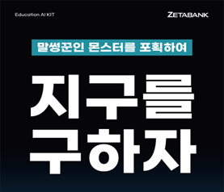
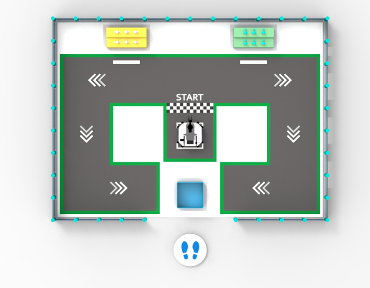
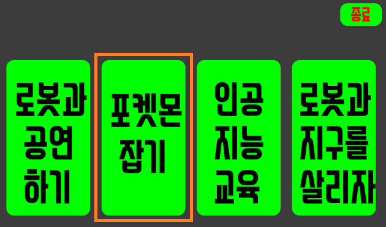

Let’s Protect the Earth from Naughty Monsters!
{kind=link}
A naughty monster is attacking Earth.
To keep the peace on Earth, the ZETABOT have equipped themselves with powerful weapons.
Now, let’s defeat naughty monsters with zetabot and keep the peace on earth!
How to play
{kind=link}
The autonomous driving ai robot is equipped with a robotic arm. The object of the game is to pick up the doll with the robotic arm and return it to the starting point.
The robot and robot arm can be moved with a joystick. The joystick operation method is as follows.
{kind=link}
{kind=link}
Large and small dolls of various sizes are placed on the table.
Use the joystick to move the robot toward the table, and then manipulate the robot arm to pick up the doll.
If you succeed in defending earth, there may be rewards!
Rules
{kind=link}
Touch the second ‘Capture Monster’.
{kind=link}
A screen similar to the picture above will appear.
{kind=link}
The first round has a 3 minute time limit.
Individuals use the robot to pick up toys and become accustomed to operating the robot arm.
{kind=link}
The second round has a 3 minute time limit.
Each team has 2 minutes to hold the doll and select the best representative.
{kind=link}
The last round has a 1 minute time limit.
The selected representative achieves the goal within the time limit.